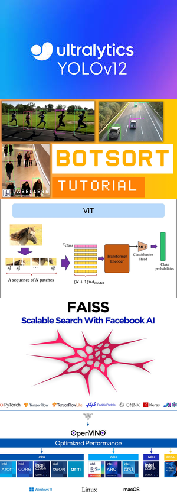
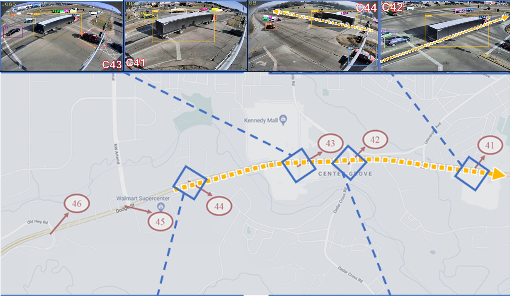

THÁCH THỨC
- Ùn tắc giao thông
- Mạng lưới camera rời rạc
- Chi phí triển khai cao
GIẢI PHÁP
Sử dụng một pipeline AI end-to-end, đã được tối ưu hóa bằng Intel® OpenVINO™ để xử lý đa luồng camera trên CPU.
CÔNG NGHỆ CỐT LÕI

KẾT QUẢ ĐỘT PHÁ
Hiệu năng Thời gian thực trên CPU Phổ thông
BASELINE (PYTORCH)
0.17 FPS
→
OPTIMIZED (OPENVINO™)
15.23 FPS
TĂNG TỐC ~8900%
